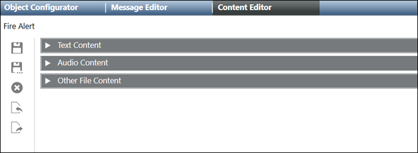
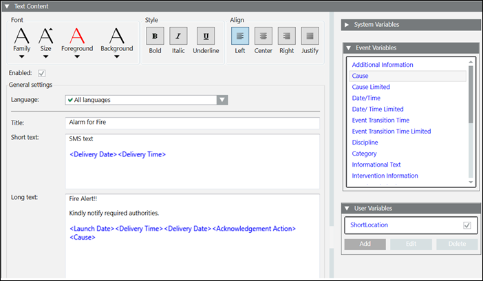
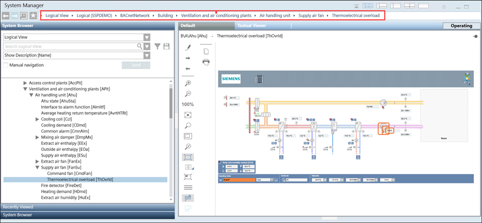
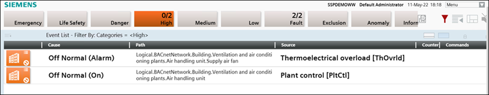
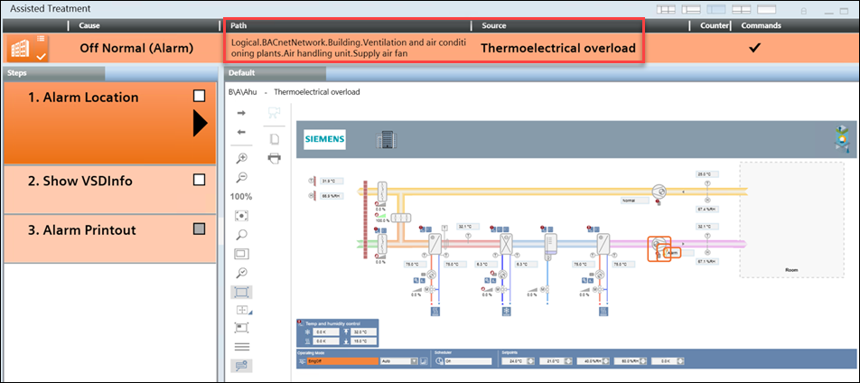
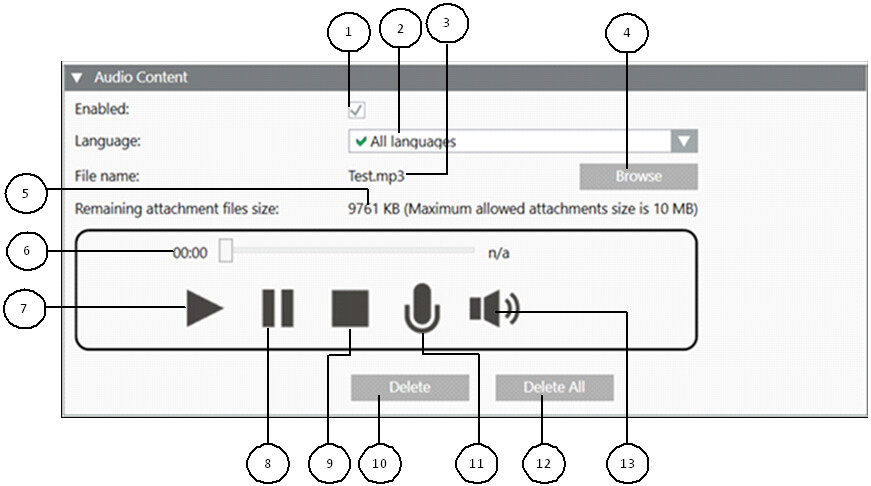
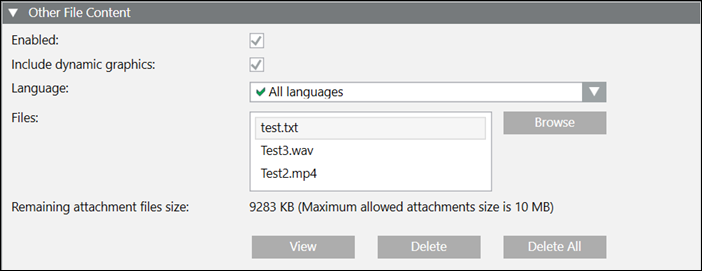
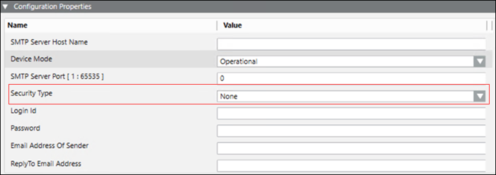

Content Editor
The Content Editor tab allows to add and configure the message content in the form of text, audio or other files (for example, video, pdf or text file).

- Text Content: Configure the message content details like title, short and long text, short and long signatures, and variables.
- Audio Content: Add an audio file to the message template.
- Other File Content: Add single or multiple files to the message template. For example, text, pdf or video file.

NOTE:
The Save As  , Delete
, Delete  , Import, Export functions are disabled for Windows App clients.
, Import, Export functions are disabled for Windows App clients.
Text Content
The Text Content expander in the Content Editor tab is shown in the following image:

- Align: Select the suitable alignment for the message text.
- Style: Select a suitable style for the message text.
- Font: Select a suitable font for the message text.
- Enabled: Enable the text content in the message template.
- Language: Allows you to change the language in which the text content is displayed. It is mandatory to provide text content in the default All Languages language. Optionally, text content can be localized for each language individually. If no localized content is provided in a specific language, then the All Languages content is sent to language-specific devices.
- Title: Enter the title of the message.
- Short Text: Enter the short text for the message. The short text is used as a content for messages that are sent through SMS and pager. New line is supported in short text. The short version of the message is sent to devices with limited display capacity.
NOTE: The maximum short text length is 160 characters. - Long Text: Enter the long text for the message. New line is supported in long text. The long version of the message is displayed on audio-enabled devices. The long text is used for text that is included as a body of an email, and so on.
NOTE 1: The default Long text length is 50000 characters.
NOTE 2: The maximum Long text length is 100000 characters.
NOTE 3: You can format the message content using the message editor controls or already formatted html text in content editor. - Enabled: (Available for Reno Plus license users) Enable the Signature field.
- Signature Short Text: (Available for Reno Plus license users) Enter the short text of the signature for the message.
- Signature Long Text: (Available for Reno Plus license users) Enter the long text of the signature for the message.
- Add: Add a new user variable.
- Edit: Edit the selected user variable.
- Delete: Delete the selected user variable.
- User Variables: Displays the list of user variables. These variables can be dragged to title, short text, and long text.
The check box next to the variable displays whether the variable is global or template-specific. If checked, the variable is global. The variable is template-specific if the check box is clear. - Event Variables: Displays the list of event variables. These variables can be dragged to title, short text, and long text. For more information on the different variables and their description, see the Event Variables table below.
NOTE:
You can set the EnableViewPriorityCustomization property to True in the project specific config file to set and define the priorities of the views. The default value is False.
- System Variables: Displays the list of system variables. Except acknowledgment action variable, the system variables can be dragged to title, short text, and long text.
For more information on the different variables and their description, see the System Variables table below.
When you add the language-specific special characters in the short text for sending a message to the ESPA 4.4.4 device, by default these special characters are replaced with their corresponding replacement characters. The special characters along with their replacement characters are listed in the below table. Similarly, while sending a message to all devices, the language-specific special characters added in short text can be replaced with their corresponding replacement character. For this, please contact system administrator.
The below language-specific special characters table can be extended for other characters. For this, please contact system administrator.
Language | Special character | Replacement character |
Czech | ě, ř, ů | e, r, u |
Danish | æ, ø, å, Å | a, o, a, A |
Dutch | ij | I |
Finish | ä, ö | ae, oe |
French | è, é, à, á, â, ô, œ, ç | e, e, a, a, a, o, o, c |
German | ä, ö, ü, ß | ae, oe, ue, ss |
Hungarian | ő, ű | o, u |
Italian | à, è, ì, ù | a, e, i, u |
Norwegian | æ, ø, å, Å | a, o, a, A |
Polish | ń, ź, ż, ł, ó, ś, ć, ą, ę | n, z, z, t, o, s, c, a, e |
Portugese | ã, õ, ç | a, o, c |
Romanian | ţ, ă | t, a |
Spanish | ñ, á, é, í, ó, ú | n, a, e, i, o, u |
Slovakian | ĺ, ä, ô, l´ | I, ae, o, I |
Swedish | ä ö å | ae, oe, a |
Turkish | ı, İ, ğ | i,I,g |
NOTE:
The language specific special characters can be added with their corresponding replacement characters in the MNS_ProjectSpecific.config file available at GMSProject > GMSMainProject > bin.
System Variables | |
Name | Description |
Acknowledgment Action | Placeholder for a customizable action that the recipient users require for acknowledging the messages. NOTE: Messages are customized for each device type and in the respective recipient user languages. For example, recipient users can reply to an email by clicking the link in that email. In case of a SMS, a four-digit code is required to reply. |
Delivery Date | Placeholder for the date on which message is delivered to a device. |
Delivery Time | Placeholder for the time at which message is delivered to a device. |
Launch Date | Placeholder for the date on which the incident was launched. |
Launch Date/Time Limited | Placeholder for the date and time in short format on which the incident was launched. |
Launch Time | Placeholder for the time at which the incident was launched. |
Launched By | Placeholder for the name of the system operator initiating the incident. |
Event Variables | |
Name | Description |
Additional Information | Placeholder for the additional information attribute of the triggering event. |
Category | Placeholder for the event category like Alarm, Fault, Life Safety and so on. |
Cause | Placeholder for the cause of the event. |
Cause limited | Placeholder for the cause of the event in short format. |
Datetime | Placeholder for the date and time of the event creation. |
Datetime limited | Placeholder for the date and time of the event creation in short format. |
Event Transition Time | Placeholder for the time of the event transition. |
Event Transition Time Limited | Placeholder for the time of the event transition in short format. |
Discipline | Placeholder for the discipline where the event has occurred like Building Automation, Building Infrastructure and so on. |
Information text | Placeholder for the information text of the event. |
Intervention Information | For messages that are part of an incident triggered by an event, this variable is a placeholder for the intervention information for the event. |
Location | Placeholder for the location or the hierarchy path in the system where the event has occurred. |
Location limited | Placeholder for the location or the hierarchy path in the system where the event has occurred in short format. |
Message text | Placeholder for the message text of the event. |
Source | Placeholder for the source of the event. |
Source alias | Placeholder for the source alias of the event. |
Source limited | Placeholder for the source of the event in short format |
Source status | Placeholder for the source status of the event. |
Status change | Placeholder for the status changes of the event. |
Subdiscipline | Placeholder for the sub discipline of the event. |
Subtype | Placeholder for the subtype of the event. |
Type | Placeholder for the type of the event. |
NOTE:
Empty or blank variables will display N/A value.
Using Event Variables in the Content Editor Tab
You can add multiple event variables in your message content. In the Thermo overload of a supply air fan example, you can see how the values appears once the event is generated.
Additional Information: BACnet Priority: 2 - BACnet Notification Class: 22
Cause: Off Normal (Alarm)
Cause Limited: Off Normal
Date/Time: 1/6/2022 4:32:37 PM
Date/Time Limited: 1/6 4:32 PM
Event Transition Time: 1/6/2022 4:32:37 PM
Event Transition Time Limited: 1/6 4:32 PM
Discipline: Building Automation
Category: High
Informational Text:
Intervention Information: BACnet Priority: 2 - BACnet Notification Class: 22
Location Limited: Air handling unit.Supply air fan
Location: DemoSSP.Site 01 - Virtual Building.Building 01.Building Automation.Air Handling and Ventilation Plants.Air handling unit.Supply air fan
Message Text: N/A
Source Alias: N/A
Source: Thermoelectrical overload [ThOvrld]
Source Limited: Thermoelectrical overload
Source Status: Active
Status Change: New event comes
SubDiscipline: Unassigned
SubType: Electrical Type: Detector
If an event is generated, where the temperature is greater than the high temperature limit, the result event variables are displayed as below.

List of events with their Path and Source values displays as shown below,

Select the particular event to display all the details as shown below,

User Variables - Data Types
Data Types | |
Item | Description |
Integer | Prompts you to enter an integer value as the input. Enter a numeric value as the default value. |
Floating Point | Prompts you to enter a floating point value as the input. Enter a numeric value as the default value specifying the number of decimals allowed. |
Date | Prompts you to enter a date as the input. Select a date as the default value specifying the display format (short, long, month-day, year-month). |
Time | Prompts you to enter a time as the input. Select a time as the default value specifying the display format (short, long). |
DateTime | Prompts you to enter a date and time as the input. Select a date and time as the default value specifying the display format (short, long, month-day, year-month). |
Text | Prompts you to enter a text as the input. Enter a text as the default value specifying the maximum length. |
Select | Prompts you to select one value from the available choices list as the input. Enter multiple choices for the user to choose a value from. |
Multiselect | Prompts you to select one or multiple values from the available choices list as the input. Enter multiple choices for the user to choose values from. |
Script (Available for Reno Plus license users) | Prompts you to select a script from the list of existing management platform scripts. On selecting the script, its function displays. Refer to Controlling the Recipients Availability using the Management Schedule topic for more information of a script example. |
AudioContent
The Audio Content expander in the Content Editor tab is as shown in the following image:

| Name | Description |
1 | Enabled | Enable audio content in the message template. |
2 | Language | Allows you to change the language in which the audio content is displayed. It is mandatory to provide audio content in the default All Languages language. Optionally, audio content can be localized for each language individually. If no localized content is provided in a specific language, then the All Languages content is sent to the language-specific devices. |
3 | File name | Displays the name of the selected audio file. |
4 | Browse | Allows you to browse the local file system and upload a file as audio content. You can upload MP3 and WAV files. |
5 | Remaining attachment files size | Displays the available file size in KB. You can add single or multiple files up to the maximum configured attachment size. The remaining file size of the configured limit is displayed here. |
6 | Progress bar | Progress bar for playing audio. |
7 | Play | Play the uploaded audio file or the recorded audio content. |
8 | Pause | Allows you to pause playing the uploaded audio file or the recorded audio content. |
9 | Stop | Allows you to stop playing the uploaded audio file or the recorded audio content. |
10 | Delete | Delete the uploaded audio file or the recorded audio content. |
11 | Record | Allows you to start recording of an audio message. |
12 | Delete All | Deletes all the audio files. |
13 | Volume | Allows you to roll over to adjust the volume. |
Other File Content
The Other File Content expander in the ContentEditor tab is as shown in the following image:

- Enabled: Enable other files content in the message template.
- Include Dynamic Graphics: Select to include the available dynamic graphics effective in case of incident triggering workflow.
- Language: Allows you to change the language in which the text content is displayed. It is mandatory to provide any supported content in the default All Languages. Optionally, other file content can be localized for each language individually. If no localized content is provided in a specific language, then the All Languages content is sent to language-specific devices.
- Browse: Browse the local file system and upload a single or multiple files as other file content.
NOTE: If you select both Dynamic Graphics and static files, the sent message will contain only the Dynamic Graphics. While selecting Dynamic graphics, make sure to select the Include Dynamic Graphics checkbox. - Remaining attachment files size: The available file size is displayed in KB. You can add single or multiple files up to the maximum configured attachment size. The remaining file size of the configured limit is displayed here.
- View: View the uploaded file.
- Delete: Delete the current uploaded file.
- Delete All: Delete all the uploaded files.
NOTE 1:
Dynamic Graphics: In distribution setup, if system is unable to extract graphics associated with event source present on other system, it uses the other file content configured in the message template. However, the system displays the image containing an error message, if there are no other file contents configured in the message template.
NOTE 2:
The attachment is deleted from the email, if the file size exceeds the maximum allowed limit or the file type is not supported.
The SMTP Email server supports the various file formats as listed in the following table.
|
File Type | File Type Extensions |
Audio Files | mp3, wav |
Video Files | mP4, avi, mpg, wmv, mov |
Image Files | JPG, TIF, PNG, GIF, svg, bmp |
Document files | pdf, docx, xlsx, pptx, one, html, txt |
NOTE 1:
You can update the supported file types for SMTP email in the Mns_ProjectSpecific.config configuration file available at [installation drive:]\[installation folder]\GMSProject\[projectname]\mns.
NOTE 2:
You can add single or multiple files up to the maximum configured attachment size. The maximum allowed attachment size is set in the Mns_ProjectSpecific.config configuration file available at [installation drive:]\[installation folder]\GMSProject\[projectname]\mns.
NOTE 3:
The unsupported file types are automatically removed when you receive an email with these unsupported file types. In the email, the unsupported file types **” are displayed at the end of the email text indicating that one more attachments are deleted.
NOTE 4:
You can modify long text length up to maximum limit. The maximum allowed limit is set to the value MaxAllowedCharactersInLongText in the MNS_InstallationSpecific.config configuration file available at [installation drive:]\[installation folder]\GMSProject\GMSMainProject\bin
When user wants to use the 100k characters in the long text, it is recommended to increase the NDB size up to 5GB.
Configuration Settings for SMTP Email for 7-bit Encoded Plain Text
Configure the following configuration settings for sending SMTP email text in 7-bit encoded plain text:
- When setting up the SMTP Email server, in the Configuration Properties expander, configure the Security Type as either:
- None
- TLS - Send out only plain text content through email by setting the value “OnlyPlainText" to “true” in the WCCOASMTPDrv.exe.config configuration file available at [installation drive:]\[installation folder]\GMSProject\GMSMainProject\bin.
- Set the property "EncodingType" value= "UTF8" to "EncodingType" value = "ASCII" in the WCCOASMTPDrv.exe.config configuration file available at [installation drive:]\[installation folder]\GMSProject\GMSMainProject\bin.
